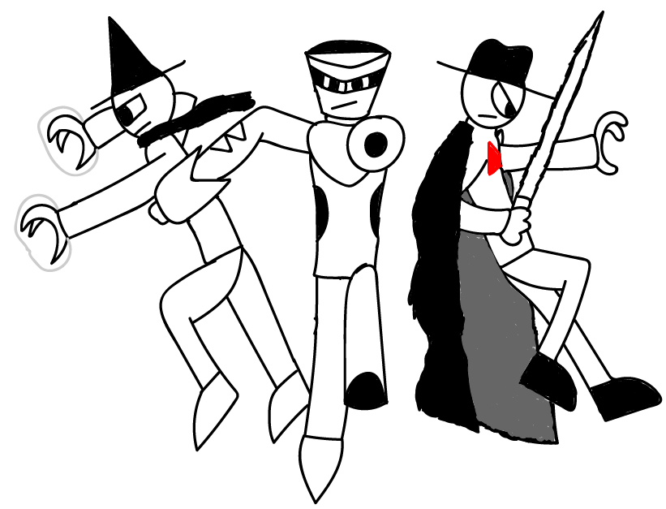
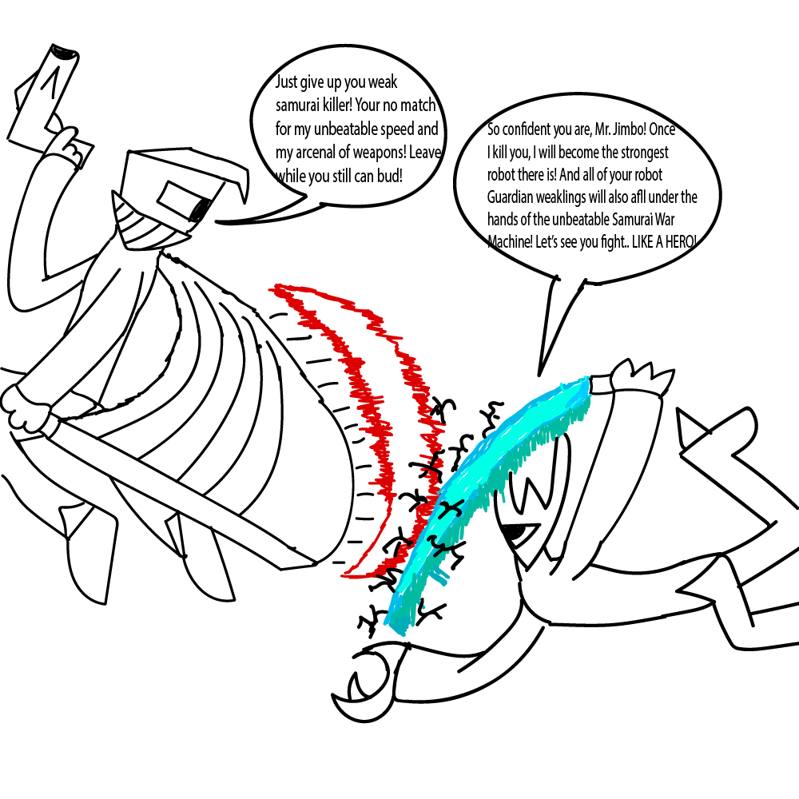
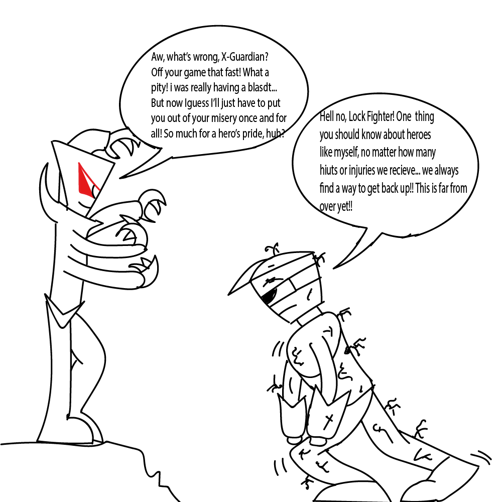
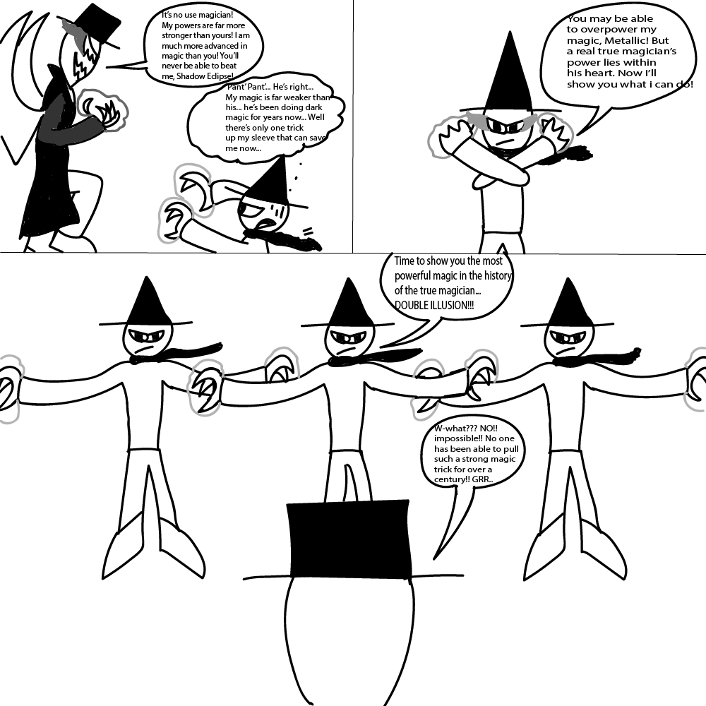

Story is about: staying strong and keep moving forward in life, and never give up. The images deplicted are fictional comic book characters that I created, and each one shows how they all manage to keep fighting what they are fighting for and never giving up.
Many sometimes think that what they want to become in the future will never be fulfilled, it's nothing like a fantasy like superheroes in a comic book. But like they always say: nothing is impossible... you can be anything in life... even a hero believe it or not.
We all at one point in our lives have encountered something that slowed us down or even gave us a hard time. But as human beings, we have the will to fight it and get through it and carry on with our lives. Such as a hero fighting a villain that gets in his way of fulfilling his destiny: which is bringing peace to the world.
Take college for example. We all manage to get pass high school and we thought that the hardest task of your education is over... Think again. Dealing with college and our everyday schedules such as work, laundry, haircuts, appointments, family emergencies, etc. at the same time is stressful. And we all think that we can't take care of all of our chores all at once. They beat us down and we have no time to take a break. But getting through and keep on moving on is the way to fulfill all these chores and to carry on to a new day, ready for anything that is yet to come.
But what if the situation is very difficult that you can't manage to get through by yourself? Is all hope lost? Not al all! You can get help if you have to. Just cause you managed to take care of one situation by yourself, doesn't mean you can do anything by yourself. There comes a time where even heroes need a bit of assistance here and there. Get as much help as you can in order to get through life and accomplish the impossible.
Credits: Smith, John. “Image Stand In” Flickr. Yahoo! Web. 7 Apr. 2011